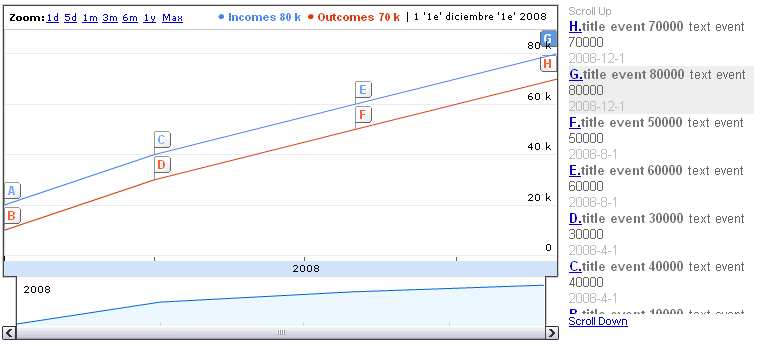

IntroductionThis control shows an interactive time series line chart with optional annotations. It basically displays the Time dimension in the X axis, and the serie's values in the Y one. The chart is rendered within the browser using Flash. ExampleThe user control is really simple, you just need to set one property in order to get the control working. The Data property. Show a simple chart illustrating outcomes and incomes during a certain period
Sub 'LoadTimeLine'
&incomes.Name = "Incomes"
&serieItem.XValue = ctod("01/01/08")
&serieItem.YValue = 20000
&serieItem.AnnotationTitle = "title event 20000"
&serieItem.AnnotationText = "text event 20000"
&incomes.Data.Add(&serieItem)
&serieItem = new()
&serieItem.XValue = ctod("04/01/08")
&serieItem.YValue = 40000
&serieItem.AnnotationTitle = "title event 40000"
&serieItem.AnnotationText = "text event 40000"
&incomes.Data.Add(&serieItem)
&serieItem = new()
&serieItem.XValue = ctod("08/01/08")
&serieItem.YValue = 60000
&serieItem.AnnotationTitle = "title event 60000"
&serieItem.AnnotationText = "text event 60000"
&incomes.Data.Add(&serieItem)
&serieItem = new()
&serieItem.XValue = ctod("12/01/08")
&serieItem.YValue = 80000
&serieItem.AnnotationTitle = "title event 80000"
&serieItem.AnnotationText = "text event 80000"
&incomes.Data.Add(&serieItem)
&outcomes.Name = "Outcomes"
&serieItem = new()
&serieItem.XValue = ctod("01/01/08")
&serieItem.YValue = 10000
&serieItem.AnnotationTitle = "title event 10000"
&serieItem.AnnotationText = "text event 10000"
&outcomes.Data.Add(&serieItem)
&serieItem = new()
&serieItem.XValue = ctod("04/01/08")
&serieItem.YValue = 30000
&serieItem.AnnotationTitle = "title event 30000"
&serieItem.AnnotationText = "text event 30000"
&outcomes.Data.Add(&serieItem)
&serieItem = new()
&serieItem.XValue = ctod("08/01/08")
&serieItem.YValue = 50000
&serieItem.AnnotationTitle = "title event 50000"
&serieItem.AnnotationText = "text event 50000"
&outcomes.Data.Add(&serieItem)
&serieItem = new()
&serieItem.XValue = ctod("12/01/08")
&serieItem.YValue = 70000
&serieItem.AnnotationTitle = "title event 70000"
&serieItem.AnnotationText = "text event 70000"
&outcomes.Data.Add(&serieItem)
&timeLine.Add(&incomes)
&timeLine.Add(&outcomes)
googleAnnotatedTimeLine1.Reload = trueEndSub
 Handling eventsAs we mentioned before, Annotated Time Line Chart Control is an interactive chart. That is, when clicking on an annotation, its corresponding information will be highlighted and a GeneXus event wil be fired as well.
Event googleAnnotatedTimeLine1.ItemSelected
msg("Serie: " + &selectedItem.SerieName + " XValue: " + &selectedItem.XValue.ToString() + " XYvalue: " + &selectedItem.YValue.ToString())
EndEvent
Note: &selectedItem is based on AnnotatedTimeLineSelectedItem SDT (this SDT is also automatically imported when dropping the control to a web form). |
| Backlinks | |
| GXGoogle Visualization Library | Web Panel form |